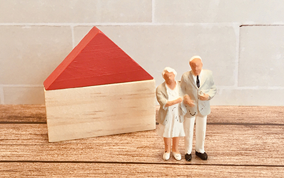
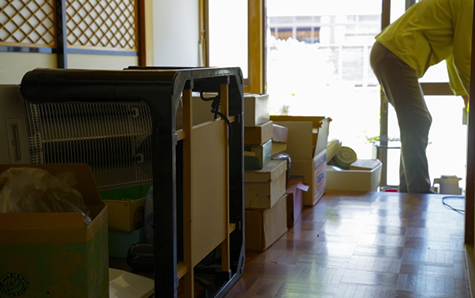
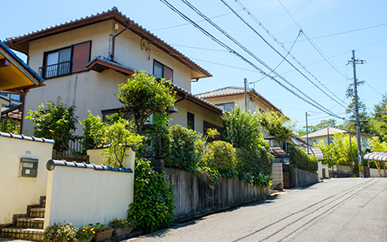
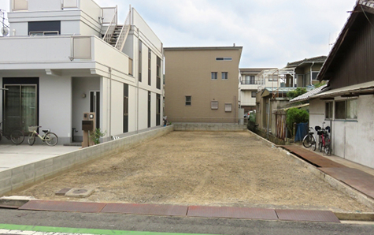

INHERITANCE / 不動産を相続した
相続した不動産の整理からご相談ください
相模原市・厚木市で相続不動産にお悩みの方へ。
状況整理から売却・活用まで、代表が直接対応します。
- ホーム
- 不動産を相続した
不動産を相続した
相模原市・厚木市で不動産を相続した方、これから相続を控えている方へ。アイモットでは、相続不動産の売却実務に詳しい代表が直接ご相談を承ります。
相続人や名義、税金、期限を整理したうえで、仲介・買取・賃貸・管理・解体などを比較し、ご家族が納得できる出口をご提案します。手続きが終わっていない段階でもご相談ください。
相続不動産に詳しい代表へご相談ください
相続不動産の売却では、通常の査定だけでなく、相続人の確定、遺産分割、相続登記、税金、残置物、売却期限などを整理する必要があります。代表が最初の窓口となり、不動産売却の視点から全体像を確認します。
必要に応じて司法書士や税理士などと連携し、何から進めるべきかを分かりやすくご案内します。
相続手続きと売却を切り離さずに考えます
相続登記が済んでいても、相続人の意向や納税資金、売却代金の分配まで整理できていなければ、売却が途中で止まることがあります。代表が売却に必要な条件を確認し、相続手続きと販売計画を並行して整理します。期限がある場合は、いつまでに何をおこなうかを明確にし、無理のない進め方をご提案します。
仲介・買取・活用から適した出口をご提案します
相続した不動産は、必ず売却する必要はありません。高値を目指す仲介、早期に整理しやすい買取、賃貸、管理、解体後の土地売却などを比較します。代表が物件の状態、相続人の希望、必要な費用、期限を整理し、売却ありきではなく、ご家族にとって負担の少ない方法を一緒に考えます。
専門家との連携も代表の楠本が窓口になります
相続登記は司法書士、税金は税理士、遺産分割の争いは弁護士など、内容に応じて専門家の判断が必要です。アイモットでは、代表が不動産売却の窓口として課題を整理し、必要な相談先と売却スケジュールをつなぎます。複数の専門家へ同じ事情を繰り返し説明する負担を減らし、解決まで伴走します。
相続した不動産は早めの状況整理が大切です
不動産を相続したら、相続人や名義、遺言書、住宅ローン、税金に関する期限などを早めに確認することが大切です。ただし、何をどの順番で調べるべきかを相続人だけで判断するのは簡単ではありません。
代表が不動産売却の視点から状況を整理し、売却・活用の判断に必要な情報と、専門家へ確認すべき内容を分けてご案内します。
遺言書と相続人を確認する
最初に、遺言書が残されていないかを確認します。遺言書がない場合は、戸籍などをもとに相続人を確定し、誰がどの財産を引き継ぐかを話し合います。
相続人の認識に違いがあると、不動産の名義変更や売却を進められません。家族だけで判断が難しい場合は、司法書士や弁護士などの専門家へ早めに相談しましょう。
不動産の名義と
権利関係を調べる
登記事項証明書を取得し、現在の名義人、抵当権、共有者などを確認します。土地と建物の名義が異なる場合や、複数世代にわたって相続登記がおこなわれていない場合は、手続きが複雑になることがあります。
権利証が見つからない場合も、代替手続きを利用できる可能性があります。まずは現状を把握することが重要です。
預貯金や借入金も
含めて確認する
相続では、不動産や預貯金などの財産だけでなく、住宅ローン、借入金、未払いの税金なども確認する必要があります。不動産に抵当権が付いている場合は、残債や返済状況も調べましょう。財産と債務の全体像が分からないまま不動産だけを処分すると、相続人同士の分配や資金計画に影響する可能性があります。
相続不動産で押さえておきたい主な期限

相続に関する手続きには、それぞれ期限があります。相続税の申告が必要な場合は、原則として相続の開始を知った日の翌日から10か月以内に申告と納税をおこないます。また、2024年4月1日から相続登記が義務化され、不動産を相続したことを知った日から原則3年以内の申請が必要です。早めに専門家へ確認しましょう。
※表は左右にスクロールして確認することができます。
| 主な手続き | 原則的な期限 |
|---|---|
| 相続放棄・限定承認 | 相続の開始を知ったときから3か月以内 |
| 準確定申告 | 相続の開始を知った日の翌日から4か月以内 |
| 相続税の申告・納税 | 相続の開始を知った日の翌日から10か月以内 |
| 相続登記 | 不動産を相続したことを知った日から3年以内 |
| 遺留分侵害額請求 | 相続と侵害を知ったときから1年以内 |
※個別の状況により期限や必要な手続きが異なるため、税理士、司法書士、弁護士などへご確認ください。
相続登記をおこなって不動産の名義を変更します
相続登記とは、亡くなった方が所有していた不動産の名義を、相続した方へ変更する手続きです。相続した不動産を売却するには、原則として相続人への名義変更が必要です。相続登記を長期間放置すると、次の相続が発生して関係者が増え、必要書類の収集や話し合いが難しくなることがあります。
相続登記は義務化されています
2024年4月1日から相続登記が義務化されました。相続によって不動産を取得したことを知った日から、原則として3年以内に申請する必要があります。
義務化前に発生した相続も対象となるため、親や祖父母名義のままになっている土地や建物がある場合は確認が必要です。登記手続きについては司法書士へ相談しましょう。
遺産分割協議をおこなう
遺言書がなく、相続人が複数いる場合は、誰が不動産を相続するかを遺産分割協議で決めます。話し合いがまとまったら、合意内容を遺産分割協議書へ記載し、相続人全員が署名・押印します。不動産を売却する場合は、誰の名義にするか、売却代金をどのように分けるかまで確認しておくと進めやすくなります。
相続人申告登記という制度もあります
期限内に遺産分割がまとまらず、通常の相続登記を申請できない場合は、相続人申告登記を利用できる可能性があります。これは、自分が相続人であることを法務局へ申し出る制度です。ただし、遺産分割後には、その内容に応じた登記が改めて必要になる場合があります。利用の可否や手続きは、司法書士や法務局へ確認しましょう。
相続した不動産の主な選択肢
相続した不動産は、必ず売却しなければならないわけではありません。自分や家族が住む、賃貸に出す、将来に備えて管理する、建物を解体して土地を活用するなどの選択肢があります。
大切なのは、維持費、収益性、管理の負担、相続人の意向を比較することです。目先の価格だけでなく、将来の負担まで含めて判断しましょう。
※表は左右にスクロールして確認することができます。
| 選択肢 | メリット | 注意点 |
|---|---|---|
| 売却する | 現金化して分けやすい | 税金や売却費用の確認が必要 |
| 自分で住む | 住居として活用できる | 修繕費や生活環境を確認 |
| 賃貸に出す | 家賃収入を得られる | 修繕・管理・空室リスクがある |
| 管理して保有する | 将来の活用を検討できる | 税金や維持管理の負担が続く |
| 解体して活用する | 土地として利用しやすい | 解体費や税負担の変化に注意 |
相続した不動産を売却するメリット
相続不動産を売却すると、管理や維持費の負担を解消し、財産を現金として分けやすくなります。特に、相続人が遠方に住んでいる場合や、複数人で不動産を共有する場合は、早めに売却することで将来のトラブルを防ぎやすくなります。
ただし、売却時期によって利用できる税制が変わる可能性があるため、事前確認が必要です。
相続人同士で財産を分けやすくなる
土地や建物は、そのままでは均等に分けることが難しい財産です。一人が取得すると、ほかの相続人との間で公平性をめぐる問題が生じることがあります。
売却して現金化すれば、遺産分割協議で決めた割合に応じて分けやすくなります。売却費用や税金を誰が負担するかも、事前に確認しておきましょう。
管理費や固定資産税の負担を減らせる
不動産を所有している間は、使用していなくても固定資産税や保険料、管理費などがかかります。マンションの場合は、管理費や修繕積立金も継続して支払います。建物が老朽化すれば、修繕や解体が必要になる可能性もあります。今後利用する予定がなければ、維持費が増える前に売却を検討することが有効です。
将来の共有トラブルを防ぎやすい
相続人が複数いる不動産を共有名義にすると、売却や大規模な変更をおこなう際に、共有者同士の調整が必要になります。さらに次の相続が発生すると、共有者が増えて関係が複雑になる可能性があります。利用予定がなく、管理方針も決まっていない場合は、現在の相続人で話し合えるうちに整理することが大切です。
相続不動産を売却する主な方法
相続した不動産は、仲介または買取で売却できます。時間をかけて市場価格に近い条件を目指す場合は仲介、早く現金化したい場合や、建物の老朽化、残置物などの課題がある場合は買取が適していることがあります。相続税の納付期限や遺産分割の予定も踏まえ、価格と期間のバランスを考えましょう。
仲介で高値売却を目指す
仲介では、不動産会社が広告や紹介をおこない、一般の購入希望者を探します。売却まで一定の期間が必要になることがありますが、幅広く買主を募れるため、市場価格に近い条件での売却を目指しやすくなります。相続人間の話し合いがまとまり、売却期限に余裕がある方に適した方法です。
買取で早く現金化する
買取は、不動産会社が買主となって物件を直接購入する方法です。一般の購入希望者を探す期間がなく、売却時期を調整しやすくなります。築年数が古い実家、残置物が多い空き家、修繕が必要な物件でも相談できる可能性があります。
ただし、仲介より価格が低くなる傾向があるため、条件を比較しましょう。
一定期間の仲介後に買取へ切り替える
売却まで多少の時間を確保できる場合は、最初に仲介で高値を目指し、期限までに売れなければ買取へ切り替える方法もあります。相続税の納付や遺産分割などの期限から逆算し、切り替える時期を決めておくことが重要です。価格と売却時期の両方を重視したい方は、不動産会社へ相談しましょう。
相続不動産の売却で確認したい税制
相続した不動産を売却して利益が出た場合は、譲渡所得税がかかる可能性があります。一方、一定の要件を満たす相続空き家の特別控除や、支払った相続税の一部を取得費へ加算できる特例があります。
適用条件や期限が細かく定められているため、売却前に税理士へ相談することが大切です。
相続空き家の3,000万円特別控除
亡くなった方が一人で住んでいた一定の家屋や敷地を相続し、期限内に売却するなどの要件を満たす場合は、譲渡所得から最高3,000万円を控除できる可能性があります。相続人が3人以上の場合は控除額の上限が異なるほか、建築時期、売却価格、耐震性などにも条件があります。利用を検討する場合は、解体や売却前に確認しましょう。
取得費加算の特例
相続税を支払った方が、相続した不動産を一定期間内に売却した場合は、相続税の一部を不動産の取得費に加算できる可能性があります。取得費が増えることで、譲渡所得を抑えられる場合があります。適用できる期間や計算方法が定められているため、相続税の申告書や売却資料を保管し、税理士へ確認しましょう。
取得費が分からない場合
相続した実家では、亡くなった方が購入した当時の契約書や領収書が見つからず、取得費が分からないことがあります。取得費は譲渡所得の計算に影響するため、売買契約書、建築請負契約書、通帳などを探しましょう。
資料が見つからない場合も、自己判断で処分せず、利用できる資料や計算方法を専門家へ確認します。
相続不動産の売却にかかる主な費用
相続した不動産を売却する際は、仲介手数料、印紙税、登記費用などがかかる場合があります。建物の状態によっては、残置物の処分、清掃、測量、解体などの費用も必要です。すべての作業を売却前におこなう必要はありません。売却価格から諸費用を差し引き、最終的な手取り額を比較しましょう。
※表は左右にスクロールして確認することができます。
| 主な費用 | 内容 |
|---|---|
| 相続登記費用 | 登録免許税、司法書士への依頼費用など |
| 仲介手数料 | 仲介で売買が成立した場合に支払う費用 |
| 印紙税 | 不動産売買契約書に課税される税金 |
| 測量費 | 境界確定や土地面積の確認にかかる費用 |
| 残置物処分費 | 家具、家電、生活用品などの処分費用 |
| 清掃費 | 室内や敷地を整えるための費用 |
| 解体費 | 建物を取り壊して更地にする費用 |
| 譲渡所得税 | 売却によって利益が出た場合にかかる税金 |
相続した実家の残置物・遺品を整理します

相続した実家には、家具、家電、衣類、写真、重要書類などが残されていることがあります。売却するために、最初からすべてを処分する必要はありません。
必要な物と処分する物を分け、売却方法に応じて整理しましょう。買取などでは、残置物を残したまま売却できる場合もあります。
重要書類や貴重品を確認する
残置物の中には、権利証、預金通帳、保険証券、契約書、印鑑、貴金属などが含まれている可能性があります。急いで処分業者へ依頼すると、相続手続きに必要な物まで処分してしまうおそれがあります。まずは相続人で確認し、保管する物、形見として分ける物、処分する物を整理しましょう。
遺品整理・残置物処分を手配する
荷物が多く、相続人だけでは整理できない場合は、遺品整理や残置物処分を専門業者へ依頼する方法があります。アイモットでは、物件の状態と売却方法を確認したうえで、必要に応じて業者との調整をサポートします。先に費用をかけず、荷物を残したまま売る場合との手取り額を比較しましょう。
遠方に住んでいる方も相談できます
相続した不動産が相模原市・厚木市にあり、相続人が遠方に住んでいる場合もご相談いただけます。現地確認や業者との調整のために、何度も足を運ぶことは大きな負担です。
代表が現地の状況を確認し、必要な作業や書類を整理しながら、売却や管理に向けた進め方をご案内します。
売却まで空き家を管理します

相続手続きや遺産分割協議に時間がかかる場合は、売却や活用の方針が決まるまで空き家を管理する必要があります。換気、通水、清掃、郵便物の確認、庭木の手入れなどを怠ると、建物の劣化や近隣トラブルにつながる可能性があります。管理できない期間が続く場合は、管理サービスの利用を検討しましょう。
定期的な換気・
通水をおこなう
閉め切った空き家は湿気がこもり、カビや建材の傷みが進みやすくなります。また、水道を長期間使用しないと、排水口の封水がなくなり、においや害虫が発生することがあります。定期的に窓を開け、蛇口やトイレの水を流すことで、建物の状態を維持しやすくなります。
庭木・雑草・郵便物を確認する
庭木や雑草が伸びたままになると、近隣敷地や道路へはみ出し、苦情につながる可能性があります。郵便物がたまると、長期間留守であることが外部から分かり、防犯面の不安も生じます。定期的に現地を確認できない場合は、管理会社などへ巡回を依頼し、報告を受けられる体制を整えましょう。
管理サービスの手配をサポートします
アイモットでは、売却方針が決まるまでの期間や、将来の活用を検討する期間に応じて、空き家管理の方法をご案内します。定期巡回、換気、清掃、庭木の管理など、必要な内容を整理し、対応可能な業者との調整をサポートします。管理にかかる費用と売却した場合の手取り額を比較して判断できます。
解体して更地にする前にご相談ください

老朽化した実家は、解体して更地にした方が売りやすい場合があります。一方で、建物を残した方が購入対象を広げられる場合や、解体によって固定資産税の負担が変わる場合もあります。
再建築不可の土地では、建物を解体すると利用方法が大きく限られる可能性があります。工事前に査定と調査を受けましょう。
建物付きと更地の
査定を比較する
相続した建物が古くても、リフォームして利用したい方が見つかる可能性があります。古家付き土地として売れば、売主が解体費を負担せずに済むこともあります。建物付きで売る場合、更地にする場合、買取を利用する場合の価格と費用を比較し、手取り額と売却期間の両面から判断しましょう。
再建築の可否を確認する
現在建物がある土地でも、接道状況などによっては、建物を解体した後に新しい建物を建てられない場合があります。再建築不可物件を解体すると、土地の利用価値が下がる可能性があるため注意が必要です。道路の種類や接道状況を調査し、再建築できることを確認してから解体を検討しましょう。
解体業者との調整もサポートします
建物を解体する場合は、費用だけでなく、残置物の処分、近隣への案内、ライフラインの停止、建物滅失登記なども必要です。アイモットでは、売却計画を踏まえて解体の必要性を確認し、必要に応じて解体業者や専門家との調整をサポートします。売却前に不要な工事を進めないことが大切です。
相続した不動産をご相談ください
相続した不動産は、時間が経つほど管理費や税金の負担が増え、相続関係が複雑になる可能性があります。すぐに売却するか決められない場合も、現在の価値、必要な手続き、維持費を把握しておくことが大切です。売却・買取・管理・賃貸・解体などを比較し、ご家族にとって納得できる方法を選びましょう。
相続から売却後まで伴走します
アイモットでは、相続不動産の売却に詳しい代表が、ご相談から査定、相続人の意向整理、専門家との連携、販売活動、引き渡しまで直接対応します。相続登記や税金の手続きが終わっていない場合も、最初に何を確認すべきかをご案内します。相模原市・厚木市の相続不動産について、売却するか決めていない段階からご相談ください。